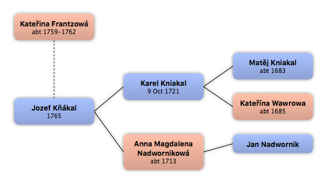

Home
Home
 Persons
Persons
 Families
Families
 Statistics
Statistics
Kateřina Frantzowá

Context

Parents
| Father | Date of Birth | Mother | Date of Birth |
|---|
Partners & Children
| Partners | Date of Birth | Children |
|---|---|---|
 Jozef Kňákal Jozef Kňákal
|
1765 |
Events
| Event Type | Date | Place | Description |
|---|---|---|---|
| Birth | abt 1759-1762 | ||
| Death | 13 Dec 1793 | Úmonín, Kutná Hora, Středočeský kraj, Czech Republic | Úmonín 17 |
Facts
Media
Note
Death http://ebadatelna.soapraha.cz/d/4506/7
Sources
Kinships
| Name | Degree of Kinship | Date of Birth | Place of Birth | Date of Death | Place of Death |
|---|---|---|---|---|---|
| Partners | |||||
| Husband | 1765 | Úmonín, Kutná Hora, Středočeský kraj, Czech Republic | |||
| Parents-in-law | |||||
| Mother-in-law | abt 1713 | Úmonín, Kutná Hora, Středočeský kraj, Czech Republic | 25 Jul 1780 | Úmonín, Kutná Hora, Středočeský kraj, Czech Republic | |
| Father-in-law | 9 Oct 1721 | Opatovice I, Kutná Hora, Středočeský kraj, Czech Republic | 4 Aug 1780 | Úmonín, Kutná Hora, Středočeský kraj, Czech Republic | |